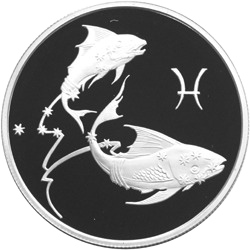

|  | PiscesAstrological Sign. Pisces (♓︎) is the twelfth and final astrological sign in the zodiac. It is a negative, mutable sign. It spans 330° to 360° of celestial longitude. Under the tropical zodiac, the sun transits this area between February 19 and March 20. |
| Dates | Work |
|---|---|
| 2010-2013 | we are still PISCES |
| 2010 | we are pisces |
| Empathy | ⭐⭐⭐⭐⭐ | Carpenting | ⭐⭐⭐ |
| Esoteric | ⭐⭐⭐⭐⭐ | Woodworking | ⭐⭐⭐⭐ |
| Nasosing | ⭐⭐⭐⭐⭐ | Otsosing | ⭐⭐⭐⭐ |